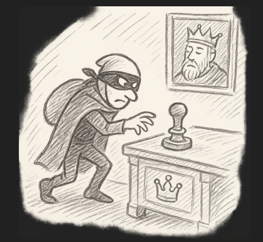

Toto je druhá část mé minisérie o elektronických podpisech. V prvním díle jsme si vysvětlili základní princip ověření a dlouhověkosti. Teď se podíváme na možné systémové slabiny. Nejčastější riziko je kompromitace vašeho soukromého klíče; to je ale poměrně zřejmý scénář, takže ho necháme stranou a zaměříme se na méně očividné útoky.
Poskytovatel certifikovaného času (TSA) musí mít k tomu pověření jako Qualified Trust Service Provider (QTSPs) a má vlastní certifikát, který má také omezenou dobu platnosti.
Určitá slabina by mohla nastat, kdyby byl klíč časovo-razítkovače ukraden a někdo chtěl uvést nesprávný čas. Certifikát provozovatele TSA lze sice také zneplatnit, ale po velmi dlouhé době to může být zapomenuto či ztraceno.
Právě proto je však služba TSA vysoce regulovaná. Její soukromý klíč musí být uložen na speciálním zařízení HSM (Hardware Security Module), které fyzicky brání kopírování. Přesný čas se generuje pomocí synchronizace s atomovými hodinami. Provozovatelé TSA podléhají pravidelným auditům a dlouhodobě archivují záznamy o každém vydaném časovém razítku, které umožňují zpětně ověřit jeho pravost. Jakýkoli rozpor by tak byl dohledatelný i dlouhou dobu po technickém vypršení jejich certifikátu.
I kdyby útočník-"časokaz" získal jejich podepisovací nástroje, měl by to nesmírně těžké. Aby mohl zfalšovat čas a způsobit reálnou škodu, musel by navíc získat i privátní klíč OCSP poskytovatele certifikátu podepisovatele. Tato OCSP odpověď sama obsahuje podepsané časové údaje s daným datem, takže by musel mít schopnost změnit i ty.
eIDAS norma článek 41 proto uvádí:
U kvalifikovaného elektronického časového razítka platí domněnka správnosti data a času, které udává, a integrity dat, s nimiž jsou toto datum a tento čas spojeny.
Toto je velmi důležitá část celého řetězce důvěry a v dalším díle se k tomu ještě vrátíme.
Dalším slabým místem je možnost, ve které by útočník získal nástroje vydavatele certifikátů, jako třeba Česká pošta. Pak by mohl vymyslet neexistující certifikát, falšovat OCSP odpovědi a podepisovat za zdánlivého uživatele který nic nepodepsal.
Z krátkodobého hlediska (několik let) by se takové zneužití pravděpodobně dalo odhalit — certifikát vydavatele by byl odvolán a incident by se dal dohledat v záznamech.
Z hlediska dlouhodobé ochrany podpisů tento scénář může být motivací k přerazítkování jednou za několik let. Součást přerazítkování pak vždy musí být kontrola všech certifikátů v podpisu, zda žádný nebyl před dobou podpisu odvolán nebo kompromitován. Za 5 let by se podvod ještě rozpoznal, za 50 let už nejspíš ne.
Nicméně toto je opět dost extrémní scénář a je k zamyšlení, zda stojí za práci a infrastrukturu s pravidelným prerazítkováním. eIDAS normy ani české zákony pravidelné přerazítkování nevyžadují, o čemž si podrobněji řekneme příště.
Teoreticky také nelze vyloučit situaci, že by byly nástroje QTSP ukradeny a kompromitace by nebyla odhalena. Pokud vím, tak eIDAS ekosystém tuto situaci neřeší. Opakované přerazítkování by tady nijak nepomohlo.
Algoritmy, které se dnes používají, mohou být po čase prolomitelné. Útočník by pak mohl zfalšovat v principu všechno, protože celý řetěz důvěry stojí na asymetrické kryptografii.
Proto úroveň B-LTA navíc přidává možnost zapečetit celej dokument "archivním časovým razítkem", s tím, že jediné další změny budou další a další pečetě budoucími algoritmy, které budou kryptograficky silnější. Tyto budoucí pečetě poskytuje TSA. Původní podepisovatel už žádný další certifikát nepotřebuje, vždy se přidá jen čas a důkaz integrity celého dokumentu.
Pro tento use-case má tedy smysl přerazítkovat teprve tehdy, kdy hrozí, že stávající kryptografické algoritmy by se mohly stát zranitelnými. V takovém případě se vytvoří nové, silnější archivní časové razítko které zapečetí celý dokument včetně všech dosavadních podpisů, OCSP odpovědí a starších razítek. Ověřovatel pak při kontrole vidí, že dokument byl naposledy zapečetěn v době, kdy předešlý algoritmus byl stále považován za bezpečný, a může pokračovat v ověřování směrem do minulosti.
Od doby kdy vznikl systém eIDAS, to zatím nebylo nikdy reálně potřeba. Běžné algoritmy, které se používaly před 10 lety, jsou i dnes zcela bezpečné.
Pro srovnání: algoritmus RSA s 1024 bitovým klíčem se běžně používal do roku 2010 a dnes už není považován za bezpečný. Dosud však neexistuje veřejný důkaz o jeho prolomení. Prolomení i takto starého certifikátu by vyžadovalo extrémní výpočetní a lidské zdroje, pravděpodobně v řádu miliard korun — nejde o "nainstalování nějaké knihovny". A možná to zatím nejde vůbec.
Tím chci říct, že změny v tomto oboru (na rozdíl třeba od umělé inteligence) nejsou nijak zvlášť rychlé. V současnosti se používají algoritmy které mohou být ještě mnoho desetiletí bezpečné: buď RSA s klíčem 2048 bitů a více, nebo rychlejší (a stejně silné) algoritmy založené na eliptických křivkách.
Všechny dnes běžně používané algoritmy by mohli prolomit kvantové počítače. Mluví se o tom teoreticky už mnoho let, ale zatím to nevypadá na nějaký radikální průlom. Nicméně pokud má někdo obavu o prolomení, pak přerazítkování silnějším algoritmem smysl dává. K tomu potřebuje TSA poskytovatele se silnějším algoritmem anebo delším klíčem. Existují i post-kvantové algoritmy, tj takové, o kterých se ví, že budou rezistentní i vůči budoucímu útoku kvantových počítačů. Jejich implementace do systému eIDAS se ale teprve připravuje.
